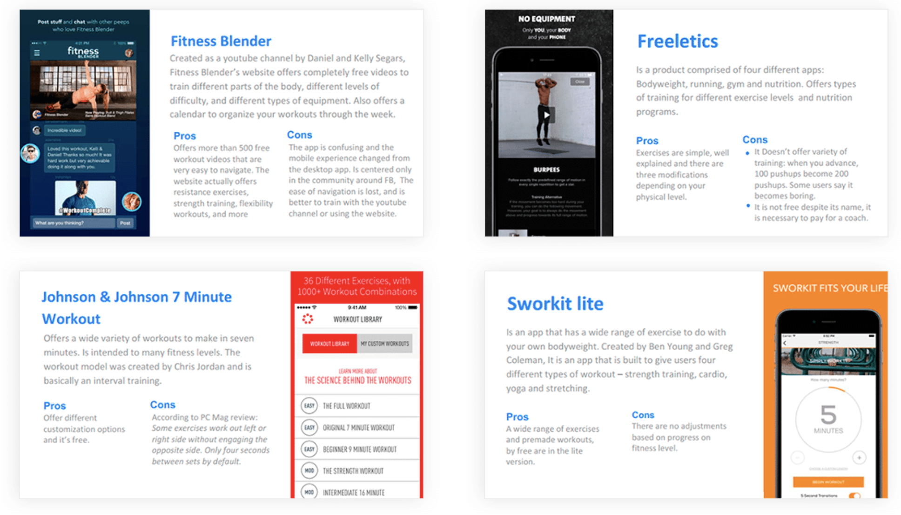

To further understand how the existent apps are addressing the issue of motivating users I conducted a competitor analysis amongst some popular fitness products. This let me discover useful features and pros and cons in the competition.

Sticking to an exercise habit is difficult. Even when we know that physical activity improves our general wellbeing, we tend to see exercise as a chore. EasyFit is an attempt to help people to stick to an exercise routine through an app that help users to begin with a simple and customizable program.
To better know the motivations of users I tried to understand the reasons people begin to exercise, how they begin their exercise path, and which obstacles they face in sticking to an exercise routine. I conducted a survey and interviewed six users to get some valuable insights.
To further understand how the existent apps are addressing the issue of motivating users I conducted a competitor analysis amongst some popular fitness products. This let me discover useful features and pros and cons in the competition.
To further understand how the existent apps are addressing the issue of motivating users I conducted a competitor analysis amongst some popular fitness products. This let me discover useful features and pros and cons in the competition.
To further understand how the existent apps are addressing the issue of motivating users I conducted a competitor analysis amongst some popular fitness products. This let me discover useful features and pros and cons in the competition.
I created a user flow and envisioned the first screens after I figured out how the general structure of the app. The phases of the process for users are as it follows:
Through a prototype created with Invision, I tested the logic of the wireframes and the app map. This exercise gave me some valuable insights that led me to a final iteration (the final visual version). This prototype can be seen here.